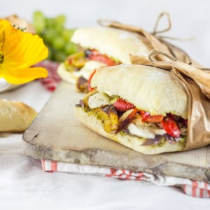
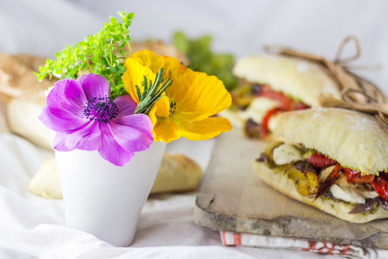
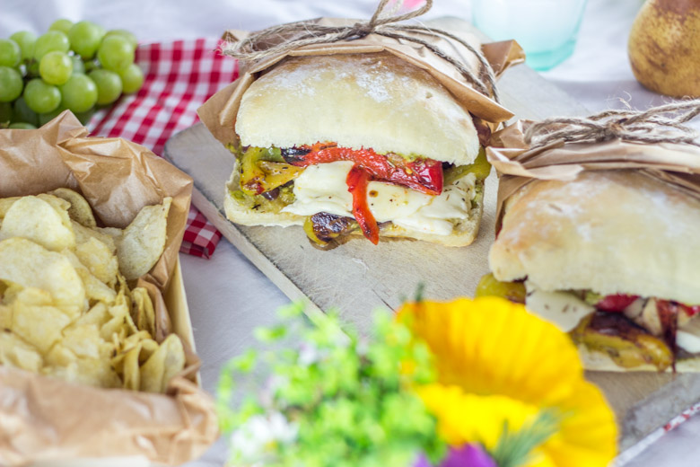

Sandwich à l’italienne bien garni pour un délicieux picnic

Avant de vous emmener en picnic, je vais rapidement vous rappeler le pourquoi de cette recette. En effet, aujourd’hui est le rendez-vous de la 7ème édition de la Foodista challenge et c’est Gordana du blog Des recettes à gogo qui était en charge du nouveau thème.
Avant de vous présenter la recette et le thème voici un petit rappel pour vous présenter ce qu’est la Foodista :
Il s’agit d’un défi culinaire, entre blogueurs et non blogueurs autour d’un thème commun décidé par la marraine désignée à chaque édition, crée par… moi-même! J’ai donc fixé les règles du jeu et chaque marraine doit en plus de décider d’un thème, choisir deux règles parmi les suivantes (histoire de pimenter un peu le tout): – Un ingrédient imposé pour les recettes sucrées et un autre ingrédient pour les recettes salées (un ingrédient commun si cela est possible) ; – Une couleur qui devra être présente dans la recette ou dans la décoration ; – Un pays qui inspirera les recettes du thème ; – Un accessoire qui devra se trouver sur les photos
Anciennes éditions : Foodista Challenge #1 : Stéphanie de Cuisine moi un mouton : « Cupcakes & muffins » Foodista Challenge #2 : Lucie de Goulucieusement : « Goûter d’automne » Foodista Challenge #3 : Aude de Contes et Délices : « Le Brunch » Foodista Challenge #4 : Julia de Les Cookines : « Les recettes cosy de Scandinavie » Foodista Challenge #5 : Anaïs de Lemon and sardine : « Un zeste de méditerranée » Foodista Challenge #6: Nath de Pourquoi je grossis… : « Petits délices… pour grands gourmands »
J’en profite également pour partager un petit scoop! En effet après l’édition de la marraine que choisira Gordana la foodista fera un petit break pour vous proposer une édition spéciale alors restez connectés!!!!!!!
Entre ciabatta, pesto (recette ici), mozzarella, poivrons nous avons voyagé un court instant dans la péninsule Italienne et nous avons trouvé un peu de soleil malgré tout mais dans nos assiettes!
A chaque fois que je prépare des sandwiches, des bruschettas ou encore des tartines, j’utilise presque tout le temps du pain ciabatta et maison c’est encore meilleur…
Il me tarde maintenant de pouvoir aller faire un vrai picnic au bord de la plage, dans une forêt ou à la campagne muni d’un panier, d’un chapeau et accessoirement de crème solaire 😉
Ingrédients
- Poivron rouge - 1
- Poivron jaune - 1
- Oignon rouge - 2
- Mozzarella - 125g (1 boule)
- Sucre en poudre - 3 càs
- Ail - 1petite gousse
- Pain ciabatta - 2
- Pesto
- Aiguilletes de poulet (facultatif)
- Thym
Instructions
- Préparer vos pains et coupez les en deux
- Couper la mozzarella en rondelles
- Ôter la peau des poivrons Plonger les poivrons dans une grande quantité d'eau bouillante (5 bonnes minutes) puis transvasez les dans de l'eau froide et détacher la peau
- Dans une poêle, faire revenir l'ail avec un peu d'huile d'olive
- Ajouter les poivrons et faites les cuire jusqu’à ce qu'ils soient bien tendre et légèrement grillés
- Pendant ce temps, coupez les oignons en fines lamelles et faites les fondre dans un peu d'huile d'olive
- Ajouter le sucre
- Une fois que les oignons sont légèrement caramélisés les sortir du feu et réserver
- Cuire les aiguillettes de poulet avec un peu de thym et d'huile d'olive
- Étaler le pesto sur votre pain
- Déposer une couche d'oignons sur la base du pain
- Ajouter des tranches de mozzarella puis les aiguillettes de poulet
- Finir par les lamelles de poivrons et refermer le sandwich


Les tips de la communauté
Recette très appréciée pour son aspect coloré, gourmand et appétissant. Les commentaires louent l'utilisation du pain ciabatta, les légumes grillés et la générosité de la garniture. Un lecteur note que les sandwichs sont parfaits non seulement pour les pique-niques mais aussi pour apporter à la pause déjeuner au bureau.
Astuces
- Le pain ciabatta est le choix idéal pour ce type de sandwich
- Les légumes grillés apportent saveur et texture moelleuse
- Utiliser des ingrédients de qualité (mozzarella frais, pesto maison)
- La générosité de la garniture est essentielle pour le succès du sandwich
Variantes suggérées
- Ajouter du poulet grillé pour plus de protéines
- Utiliser différents fromages (provolone, chèvre frais)
Ajustements signalés
- que je regarde ta recette de plus près pour les pains ! Je n’ai encore jamais essayé de faire mon pain maison )